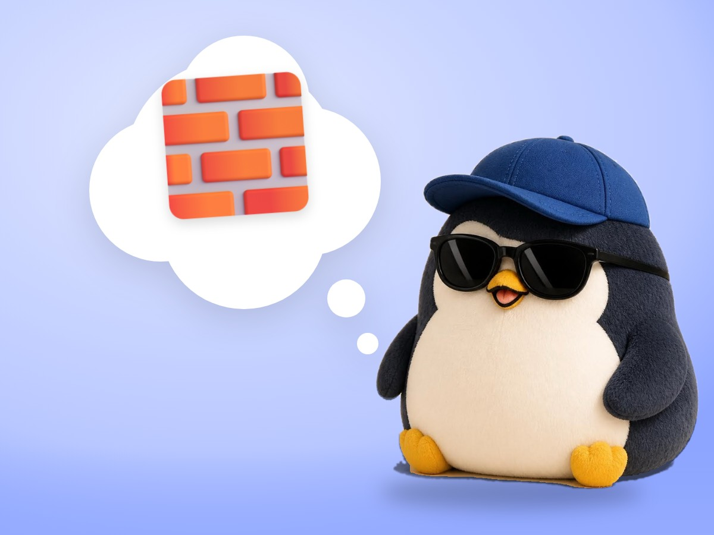

📝 DRAFT · 下書き — まだ本番に出していません · 下書き一覧
🐧 EVERYDAY LIFE⚡ 21 SEC
There are 3 kinds of confidence, and you have value just by living 🧱

3 Kinds
It seems there are 3 kinds of confidence.
1st And 2nd
The 1st comes from outside, like school, money, or looks.
The 2nd is "I can do it if I try."
The 3rd
The 3rd is "I still have value," even with no reason.
⚡ TRY IT
Try to knock down the tower
Tap "Bad day!" 5 times. 🌪️
📉 Your test score went down.
✂️ Your haircut went wrong.
👛 Your wallet is empty.
☔ It rained on your trip day.
🧦 A hole in your sock… again.
🎓💰✨ From outside
💪 I can do it
🌪️ Bad days:0/5
Which block will fall?
🎓 The block from outside fell off!
💪💖 It shakes… but the rest is still standing.
💖 It wobbles, but it never falls.
🐧💖 5 bad days, and "I have value" did not move.
Just By Living
People have value just by being alive.
The Proof
If someone is about to fall off a cliff, you try hard to help, whoever it is.
📚 I learned this from the Japanese blog "Panda no Ondo".